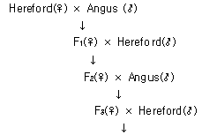
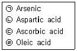
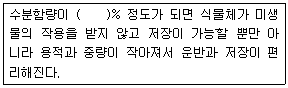
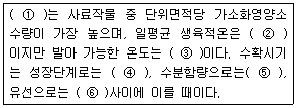
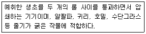
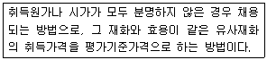

1과목: 가축육종학
1. 멘델의 독립의 법칙에서 F2의 표현형이 8종류로 출현되는 경우는?
2. 유우의 경제형질 중 비유량의 유전력은 얼마인가?
3. 경산돈의 모돈생산능력자수(SPI) 산출과정에 대한 설명으로 옳지 못한 것은?
4. 닭에 있어서 우성의 반성유전자인 B는 검은색에 흰 횡반이 나타나게 한다. 동형 접합체인 횡반의 수탉에 횡반이 아닌 흑색 암탉을 교배시켰을 때에 잡종 1대에서 수탉의 색깔은?
5. 염색체의 이수현상을 틀리게 표현한 것은
6. 돼지의 다음 경제형질 중에서 유전력이 가장 낮은 것은?
7. 잡종강세를 이용하기 위해 특정 계통을 다른 계통과 교배시켜 얻은 자손에 다한 능력의 좋고 나쁨을 조합 능력이라고 한다. 다음 중 조합능력을 개량하기 위하여 고안된 육종방법은?
8. X형질과 Y형질의 유전분산은 각각 4.0 및 9.0이며 이들 두 형질간 유전공분산은 3.0이다 이들 두 형질간 유전상관은?
9. 다음 중 Hardy-Weinberg 평형을 이루는 조건을 설명한 것은?
10. 다음과 같은 방식의 잡종교배방법은?

11. 3원 교잡이란 무엇인가?
12. 한우 송아지 이유시 체중과 밀접한 관계가 있는 것은?
13. 선발지수 법을 올바르게 설명한 것은?
14. 다음중 DNA에는 없고 RNA에만 존재하는 질소염기는?
15. 콜히친의 임계농도에서 방추사가 형성 되지 않는 세포분열 과정이 일어나는데 이를 무엇이라 하는가?
16. 우성 백색인 Leghorn종 닭(IICC)과 열성백색인 PlymouthRock종 닭(iicc) 사이에 태어난 F1간의 교배에 의해 부화된 400마리의 F2병아리 중에서 백색인 것은 몇 마리인가?
17. 수컷 3두, 암컷 100두인 폐쇄집단을 무작위 교배매세대 유지할 때 근교계수가 매세대 상승하는 정도는 얼마인가?
18. A, B, C, D 육우 축군에 있어 체중의 평균값은 동일하나, 이의 분산 값이 각각 150, 100, 50, 10 이라면 어느 축군이 보다 균일화 되었다고 할 수 있는가?
19. 돼지육종에 있어 개량하고자 하는 경제형질이 아닌 것은?
20. 돼지의 능력검정에 대한 설명으로 틀린 것은?
2과목: 가축번식생리학
21. 사출된 정자의 생존성과 운동성에 결정적인 영향을 미치는 요소가 아닌 것은?
22. 다음 중 임신 후 난자의 투명대 소실시기가 틀린 것은?
23. 다음 중 소의 정자형성에 관한 설명으로 틀린 것은?
24. 프리마틴이 갖는 특징의 설명으로 적절하지 않은 것은?
25. 자궁을 형태적으로 분류할 때 쌍각자궁에 해당하는 동물은?
26. 다음 중 발정한 암퇘지의 배란시기로 옳은 것은?
27. 다음 중 가축의 번식에 직접 관여하는 호르몬들을 분비하는 기관들만을 묶어놓은 것은?
28. 소의 난자가 배란된 후 수정능력을 유지할 수 있는 최대의 시간은?
29. 포유가축에서 모자간 일어나는 흡유 행동의 자극이 아닌 것은?
30. 소의 분만시 파수현상의 순서와 파괴되는 막을 바르게 설명한 것은?
31. 주요 가축의 번식적령기를 결정하는 주요 원인은?
32. 소에서 prostaglandin의 중요한 기능으로 맞는 것은?
33. 정자의 수정능력 획득과 관련한 내용 중 틀린 것은?
34. 포유류 난관의 구성순서가 옳은 것은?
35. 하나의 제1정모세포는 몇 개의 정자로 발달하는가?
36. 발정주기 동기화의 장점이 아닌 것은?
37. 하나의 난모세포는 몇 개의 난자로 발달하는가?
38. 유선발육에 관여하지 않는 호르몬은?
39. 다음 중 뇌하수체 전엽에서 분비되는 성선자극호르몬은?
40. 젖소의 난소에서 난포가 발육되지 않아 무발정이 계속될 때 치료제로서 가장 적합한 호르몬은?
3과목: 가축사양학
41. 팔미트산이 체내에서 완전히 산화되면 에너지 효율은 약 얼마인가?(단, 필미트산 → 2,320kcal/몰)
42. 다음 가용무질소물 중 이당류에 해당하는 것은?
43. 간으로부터 분비되는 담즙산의 중요한 기능이 아닌 것은?
44. 자돈의 빈혈 방지와 가장 거리가 먼 것은?
45. 다음 중 식물성 사료에서 인 의 이용에 방해되는 형태의 물질은?
46. 산란계사에 산란 직전의 대추를 10000수 입식하였는데 현재 9000수가 생존하여 1일 8000개의 계란을 생산하고 있다. 이 계군의 헨하우스(hen-housed) 산란지수는?
47. 다음 소화율을 설명한 것 중 틀린 것은?
48. 신생 자돈의 환경에서 적온은 몇 도인가?
49. 사일로의 형태별로 초종별 추천 수분함량이 다른데, 탑형사일로에서 유선 1/2~2/3기의 옥수수의 추천 수분함량으로 가장 적당한 것은? (단, 세절길이는 3/8~1/2로 한다.)
50. 다음 중 닭의 영양소요구량에서 고려하여야 하는 미량광물질로만 맞게 짝지어진 것은?
51. 다음 중 활성흡수에 의해 흡수되는 영양소는?
52. 다음 아미노산 중 필수아미노산이 아닌 것은?
53. 브로일러 종계의 체중조절을 위해서는 계군 평균 체중 조사를 2주령 ~ 초산시까지 매주 측정을 실시해야 하는데, 계군의 평균체중의 균일성을 알기 위해 사용하는 방법 중 변이계수를 구하는 공식이 있다. 다음중 맞는 것은?
54. 반추동물에 있어서 다음 곡류 중 대사열량(ME)함량이 가장 많은 것은?
55. 체중 120kg인 후보모돈 돈방의 정당한 여름철 환기량은?
56. 다음 중 단백질 분해 생성물과 분해효소가 바르게 연결된 것은?
57. 다음 [보 기]의 영양소를 바르게 골라 나열한 것은?

58. 다음 중 동물성 단백질 급원사료라고 볼 수 없는 것은?
59. 단백질함량이 10%인 곡류와 36%인 농축사료를 가지고 16%(단백질)인 양돈사료를 100kg 제조하는데 곡류와 농축사료의 배합비율이 적당한 것은?
60. 반추위 내에서 미생물이 비타민 B12를 활성할 때 꼭 필요한 무기물은?
4과목: 사료작물학 및 초지학
61. 다음 ( )안에 적합한 숫자는?

62. 사료작물의 기상 생태학적 분류에서 난지형 작물에 속하는 것들로만 짝지어진 것은?
63. 초지조성시 불경운초지 개량이 경운초지 개량에 비해서 유리한 점이 아닌 것은?
64. 초지에서 양호한 재생과 식생유지를 고려한 예취높이는 오처드그라스 위주의 혼파초지에서는 어느 정도 높이가 가장 적당한가?
65. 두과목초 종자의 근류균 접종으로 절감할 수 있는 비료 성분은?
66. 원형곤포를 이용한 비닐 랩 사일리지 조제시 작업 단계가 순서대로 나열된 것은?
67. 여름철 북방형 화본과목초에서 흔히 볼 수 있는 하고현상과 가장 관련이 있는 생리적 현상은?
68. 북방형(한지형)목초의 생육 적온은?
69. 일반적으로 오처드그라스를 채초용으로 단파 할 때 ha당 가장 적당한 파종량은?
70. 호밀(호맥)을 사일리지로 만들 때 수확은 어느 시기에 하는 것이 가장 좋은가?
71. 중부지방에서 양질조사료의 다수확을 위한 1년 중 사료 작물의 작부체계는 어떠한 형태가 가장 적당한가? (단, 이용 시기를 중심으로 선행한 작물이 먼저 재배하는 작물이다.)
72. 다음 설명의 괄호 안에 들어가야 할 내용이 올바르게 짝지어진 것은?(순서대로 ①, ②, ③, ④, ⑤, ⑥)

73. 다음 목초 및 사료작물 중 단위면적당 단백질 생산수량이 가장 높은 종류는?
74. 옥수수 파종시 10a 당 성분량으로 20kg 의 질소비료를 줄 경우 이 양은 요소로는 얼마만 한 양에 해당하는가?
75. 옥수수사일리지를 제조하려고 하는데 재료의 수분이 너무 많을 경우 수분 조절방안으로 적합한 것은?
76. 사일리지 발효에 관여하는 미생물 중 저장성을 향상시키고 pH를 낮추어 주는 유익한 균은?
77. 건초 조제시 손실이 가장 적을 것으로 예상되는 것은?
78. 다음에서 설명하는 기계는 무엇인가?

79. 방목지에 목책을 사용하여 몇 개의 목구를 분할하고 각 목구에 일정기간 머무르면서 채식하여 모든 목구를 한 차례 회전하면 다시 처음 목구로부터 방목을 하는 집약적 방목법은?
80. 하고현상을 방지하기 위한 대책이 될 수 없는 것은?
5과목: 축산경영학 및 축산물가공학
81. 우리나라 축산의 당면과제라고 볼 수 없는 것은?
82. 생산량의 증감과 무관하게 지불되는 비용은?
83. 도시근교 낙농과 도시원교 낙농의 차이를 성명한 것이다. 부적절한 것은?
84. 축산경영인의 역할에 포함되지 않는 것은?
85. 자산평가액을 내용년수의 합계로 나누고 이것에 그 연수의 역을 곱해서 각 연도의 상가액을 구하는 감가계산법은?
86. 주어진 생산자원으로 동일한 생산과정에서 둘 이상의 생산물(Y1, Y2)이 생산될 때, 이들 생산물은 어떤 관계인가?
87. 다음 주요 진단지표의 계산 방식 중 틀린 것은?
88. 쇠고기 1kg을 생산하기 위하여 8.9kg의 사료량이 필요하다는 것은 축산경여의 일반적 특징 중 어느 것에 해당하는가?
89. 다음 축산경영조직의 결정조건 중 사회적 조건과 거리가 먼 것은?
90. 다음 중 자본재 평가방법이 아닌 것은?
91. 축산경영자가 의사결정을 하는 과정에서 마지막으로 취해야 할 사항은?
92. 다음 중 비육우경영의 조수익을 증대시키는 방법이 아닌 것은?
93. 한계생산비란 무엇인가?
94. 다음 설명은 고정 자본재의 어떤 평가방법인가?

95. 낙농경영에서 젖소의 감가상각비(정액법)를 계산하는 공식은?
96. 한우 번식경영에 관한 설명으로 틀린 것은?
97. 축산경영 농가에 대한 진단시 경영실험농장 혹은 시험장의 성적과 비교 판단하는 경영진단 방법을 무엇이라고 하는가?
98. 다음 생산비의 내용 중에서 고정비인 것은?
99. 다음 중 축산경여에서 유동자본재가 아닌 것은?
100. 육계에 대한 사료급여량(X)과 출하시의 체중(Y)과의 관계가 Y = 1+0.5X-0.25X2 이고, 육계용 사료가격 (Px)이 kg당 250원, 육계출하가격(Py)이 kg당 1000원이라면, 수익이 최대가 되는 사료투입수준은?